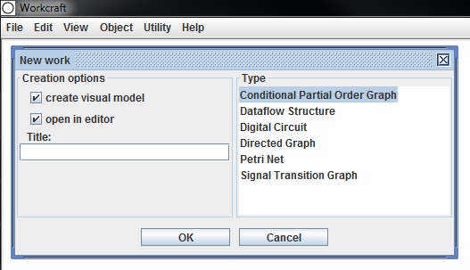

This page describes the SCENCO plugin that is provided as a part of the standard Workcraft distribution. The plugin allows to specify a collection of behavioural scenarios, e.g., microprocessor instructions, and then combine them into a compact graph representation using the optimal encoding techniques1). Hence the name SCENCO, that is SCENario ENCOder.
First of all, make sure you have the latest version of Workcraft installed. The SCENCO plugin is currently only available for documents using the Conditional Partial Order Graph model. To create a new document of this kind click File → Create work… then select Conditional Partial Order Graph in the opened window and click OK. You can also give name to the created file as shown below.

There are two different ways of creating scenarios: by drawing their graphical representations and by entering their algebraic descriptions. In practice a combination of both works best.
To create a scenario, first add the events (vertices) by activating the Vertex tool and clicking on the places where you want to place them. Then add the dependencies (arcs) between the events using the Connection tool . You can move the elements of the graph and edit their properties using the Selection tool . Finally, select the graph representing the scenario and click to create a box (group) encapsulating the vertices and arcs of the scenario inside. You will then be able to label the scenario. If you wish to edit the scenario later click and to go inside/outside the group.
Repeat the above steps to add more scenarios into the document.
Drawing scenarios graphically may be a tedious process, so we implemented an alternative way to create them. The Selection tool has a text box which can be used for specifying an algebraic representation of a graph2), which can then be added into the document by clicking the Insert button below it, as shown on this screenshot:

The following examples show simple algebraic expressions and describe the corresponding graphs:
a + b + c – this will insert a graph with three vertices labelled 'a', 'b' and 'c' and no arcs.
a -> b + c – this will insert a graph with three vertices a, b and c and an arc going from vertex a to vertex b.
a + (b + c) -> d – this will insert a graph with four vertices a, b, c and d and two arcs going from vertices b and c to vertex d.
Note that the + operator can be omitted for clarity, hence inserting the expression shown in the above screenshot will produce the following graph (after manual layout):

We plan to implement more sophisticated automated graph layout options in future versions of the plugin.
Once you have created all the scenarios it is possible to use the SCENCO plugin to automatically generate an optimal encoding for them and combine the scenarios into a Conditional Partial Order Graph. To do this, go to Tools → Encoding → CPOG Encoding. This will create a new group with the synthesised Conditional Partial Order Graph and will show the computed encodings below each scenario.
It is important to tune the encoding tool in order to produce results of desired quality. This can be done by navigating to the settings page (Edit → Preferences…) and locating the section related to the SCENCO plugin. You will be able to set the following parameters:
Paths to supported SAT solvers; currently
minisat3) and
clasp4) are supported. One of them needs to be installed.
The preferred SAT solver.
The number of encoding variables (note that you need at least log2(N) variables to encode N scenarios).
The maximum number of 2-input gates in the combinational circuit computing all the conditions in the resulting Conditional Partial Order Graph.